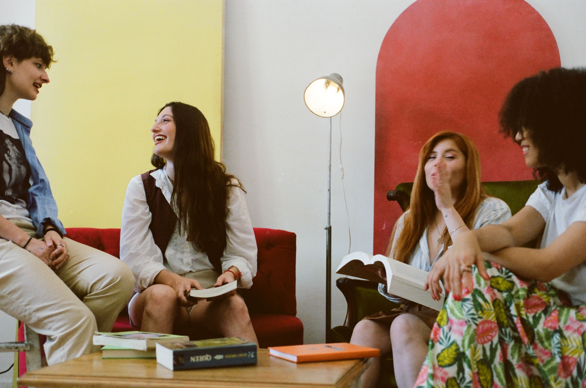

«Una jornada literaria cumple su sentido cuando convierte la lectura en conversación compartida.»
Las jornadas de JL Letras nacen con la vocación de reunir en Sevilla conversaciones, lecturas y propuestas formativas vinculadas a la creación literaria. Están pensadas tanto para quienes escriben de forma habitual como para lectores curiosos que disfrutan descubriendo nuevas voces y perspectivas.
A lo largo de las distintas citas programadas, el encuentro combina reflexiones sobre el oficio de escribir con espacios abiertos al diálogo entre autores invitados y público asistente.
-
Mesas redondas y diálogos
Encuentros temáticos sobre narrativa contemporánea, crónica, ensayo y poesía con autores invitados.
-
Talleres de creación y lectura
Sesiones prácticas centradas en la construcción de personajes, la voz narrativa y la revisión de textos.
-
Certamen literario JL Letras
Lectura pública de relatos seleccionados y encuentro con el jurado en el marco de las jornadas.
Un espacio abierto en el corazón de Sevilla
Todas las sesiones mantienen un formato cercano y accesible, cuidando los tiempos de intervención y el turno abierto de preguntas para favorecer el intercambio directo con los ponentes y participantes.

La asistencia a las charlas principales es libre hasta completar aforo, mientras que los talleres prácticos requieren inscripción previa desde la sección de Concurso y Contacto.
Sede de las jornadas: Ayuntamiento de Sevilla
Plaza Nueva, 1, 41001 Sevilla (Andalucía). Acceso peatonal y conexión directa con tranvía y líneas urbanas.